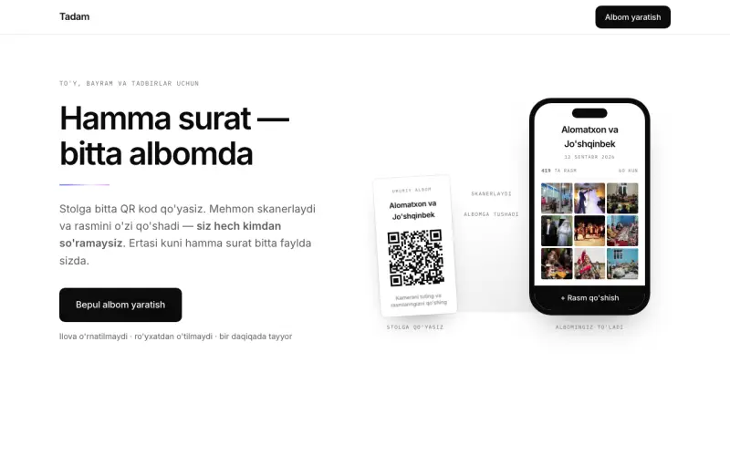

Notes / Tadam
Tadam: every wedding photo in one album, with no app and no database
Guests scan one QR code on the table and add the photos already on their phones; the couple downloads everything as one ZIP. How it works without an app, an account or a database.

- Live
- tadam.uz
- Launched
- 27 August 2026
- Guest needs
- a phone camera
- Storage
- Cloudflare R2 only
- Photos kept
- 60 days
- QR reads from
- 15–85 cm
At an Uzbek wedding there are three hundred guests and three hundred phones. By the end of the night those phones hold the only photographs that show anything real: the tables, the dancing, a grandmother laughing at something off camera. The couple will see about twenty of them, forwarded into a group chat and compressed into mush.
Tadam fixes that with a QR code on the table. It went live at tadam.uz on 27 August 2026.
The flow
The couple creates an album with a title and a date. Nothing else, no account. They get three things back: a guest link, a management link and a printable QR sheet. The sheet goes on the tables.
A guest scans it, the camera roll opens, they pick photos and upload. No app, no sign-up, no password. The next day the couple opens the management page and downloads every photo as a single ZIP.
The home page explains all of that before you scroll, because most visitors arrive from a link dropped in a wedding Telegram group and give it about four seconds.
No app, and no database either
Nobody at a wedding, holding a plate, is going to install an app. It has to be a web page that works on the first tap.
The second decision was less obvious. The whole product is one Cloudflare Worker with R2 as its only storage. No SQL, no key-value store. Album details live in the metadata of R2 objects and the photo list is a listing of an R2 prefix. A wedding album is written once, read a few times and then never touched again; that does not need a database, and every database I did not add is one less thing that can go down at 11 pm on a Saturday.
The name
For its first three days it was called Chaqnoq. Then I said it out loud to someone and watched them fail to spell it back. A wedding product is spoken about, not typed, so a consonant cluster that does not survive a bad phone speaker is a real problem. Tadam is the sound a magician makes when the trick lands: two syllables, spelled the way it sounds in Uzbek, Russian and English. The old domain, chaqnoq.uz, still sends people to tadam.uz.
Renaming a live codebase showed me how many places a name hides. I wrote a rename script that knew the difference between the brand in visible text, in a CSS class and in an API path that must not change, and made it print every match in a dry run before touching anything. A blind find-and-replace would have broken the address of every album already created.
The QR code, measured
The QR sheet is the physical product. If it does not scan from a seated guest's arm's length, in dim light, on a sheet with plov on it, nothing else matters. So I measured instead of hoping: I rendered the code at the pixel sizes a phone camera sees from different distances and ran a decoder against each one. It reads reliably from about 15 to 85 cm. It is generated at error-correction level Q, which can rebuild the content with roughly a quarter of the code damaged. That is the stain tolerance.
Some guests will type the link instead. It used to be 23 characters including a question mark and an equals sign; now it is tadam.uz/ plus nine lowercase letters and digits. I was asked whether the ID could be seven characters instead of nine and said no: the link is the password to other people's wedding photos, and two fewer characters would make it about a thousand times easier to guess.
The parts that were actually hard
- Trusting nothing about an upload. A file's extension and its declared type are only claims. Every upload is checked by its first bytes, for JPEG, PNG, WebP, GIF and HEIC (the last needs a walk into the file's box structure, and iPhones are the main camera here). Oversized files are refused before the body is read.
- Serving user content safely. Photos are served with a content policy that forbids running anything, so even a stored file that looked executable could not run, reach the network or touch the page.
- IDs that are really random. The obvious way to pick a random character is biased whenever the alphabet does not divide 256 evenly. I measured the bias over two million samples, found 12.65%, and replaced it with rejection sampling.
- Delete without an account. Each photo gets a delete key derived with SHA-256 from the album and the photo, so a guest can remove a photo they regret and the couple can remove anything. The key is compared in constant time so it cannot be guessed byte by byte.
- A ZIP with a real progress bar. A ZIP streamed from a Worker normally has no length, so the browser shows a spinner and the couple cannot tell 10% from 90%. I worked out the exact byte size of the ZIP before generating it, so the download shows real progress.
Small details I am glad I spent time on
Photos delete themselves after 60 days, and the site says so plainly; storing other people's wedding photos forever is a liability, not a feature. Fonts are self-hosted and subset, so there is no third-party request. When an album is created I get a Telegram message, without any way to look at the photos. And there are 113 automated tests with no test framework, run against a real deployment, rate limiter included.
What I am not claiming
I was tempted to write "the first and only service of its kind in Uzbekistan" on the home page. I did not, because I have not checked every competitor in the country and I cannot prove it. Everything on a product with my name on it has to hold up.
Make an album at tadam.uz. It takes about a minute.